Dieses Kapitel beschreibt …
- Wer dieses Onlinelehrbuch geschrieben hat.
- Welche Inhalte wir in der Vorlesung behandeln werden.
- Welches didaktische Modell in dieser Vorlesung verfolgt wird.
- Welche Software du für die Bearbeitung der Übungen benötigst.
Erzähl mir etwas und ich werde es vergessen.
Zeig mir etwas und ich werde mich erinnern.
Lass mich etwas erleben und ich werde es verstehen.Chinesisches Sprichwort
Sich für vieles interessieren, ständig Neues entdecken,
Dinge selbst können, verstehen, wie sie funktionieren
und warum sie so sind, wie sie sind.
Nicht alles glauben, was man liest oder hört,
sondern stets kritisch bleiben.
Aber auch nicht immer alles bierernst nehmen.
Gemeinsam sind wir stark!
Bildnachweis: Pixabay: kreatikar
Bildnachweis: Pixabay: kalhh
Bildnachweis: Pixabay: Templune

Bildnachweis: Pixabay: designwebjae2
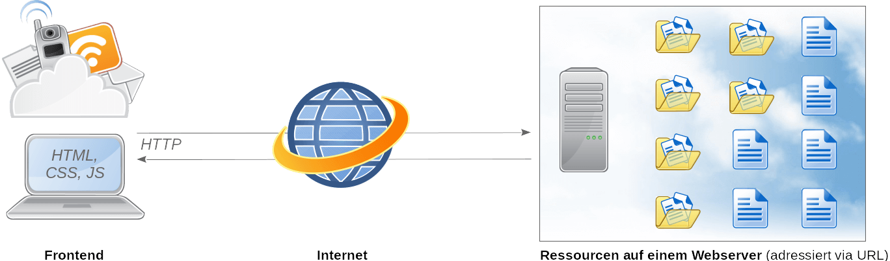
Eigenständiges Lernen im eigenen Tempo
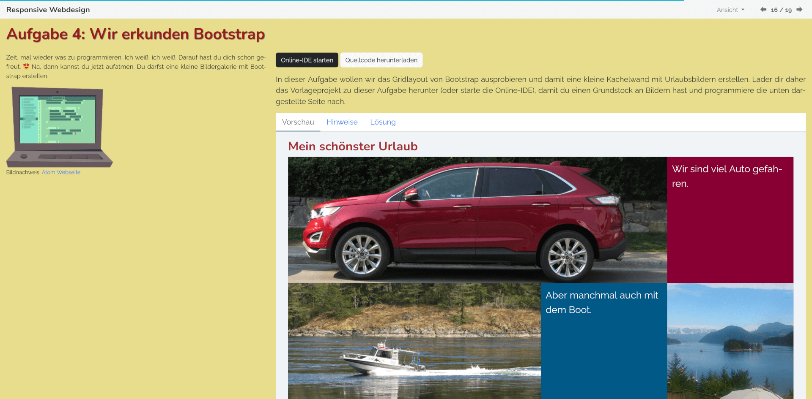
Abgabe der Lernkontrollen und Übungsaufgabe in Moodle zu den jeweils vereinbarten Terminen. Bei den Übungsaufgabe ist je Kapitel eine Aufgabe aus dem Skript zu wählen und eigenständig zu bearbeiten.
Inhaltliche und praktische Vertiefung
In den Vorlesungen vertiefen wir die Selbststudiumsinhalte mit praktischen Beispielen. Zusätzlich wird es Zeit für Übungen und das Portfolio geben, um dieses zumindest teilweise in Präsenz bearbeiten zu können.
Wissen in der Gruppe teilen
Jede Gruppe vertieft ein über die Vorlesung hinausgehendes Thema (nach eigenem Interesse) und präsentiert es am Ende des Semesters vor dem Kurs. Zusätzlich stellen sie Verständnis und Kontrollfragen für ein Moodle-Quiz bereit.
Bildnachweise: Eigener Screenshot / Generiert mit Google Gemini / Pixabay: TungArt7
Die Vorlesung folgt einem abgewandelten „Inverted Classroom Model“:
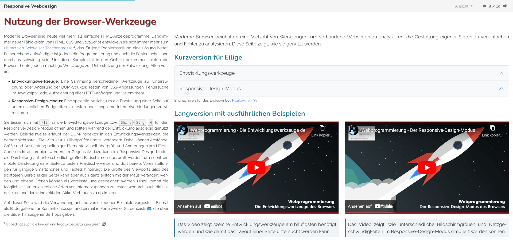

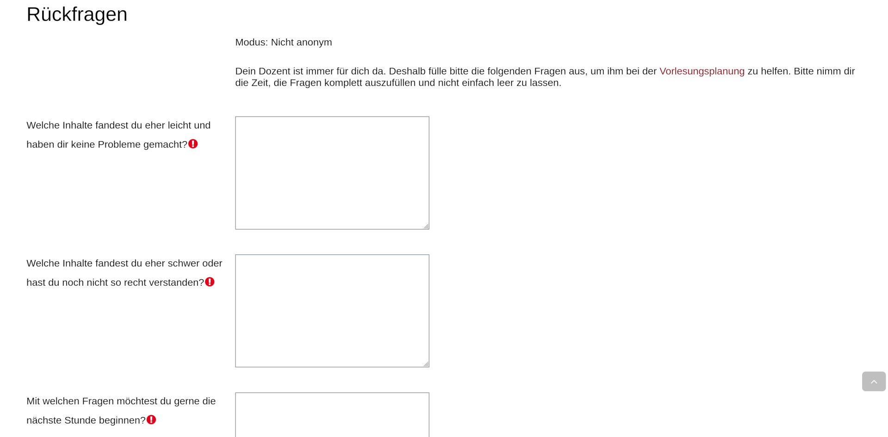
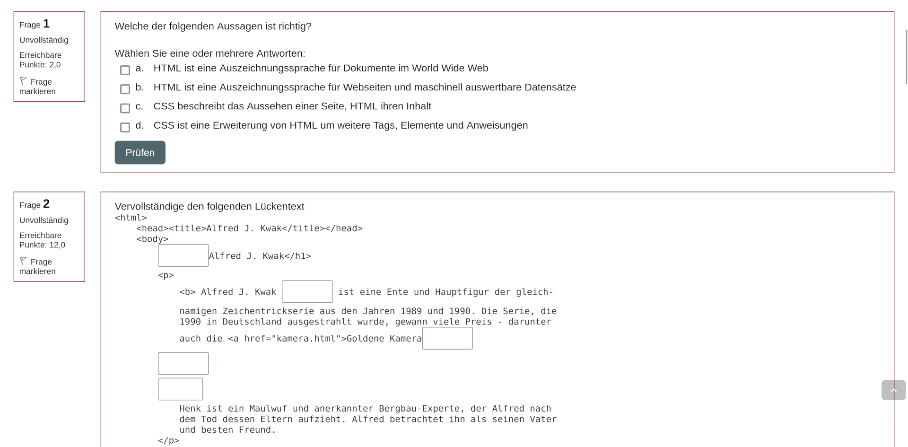
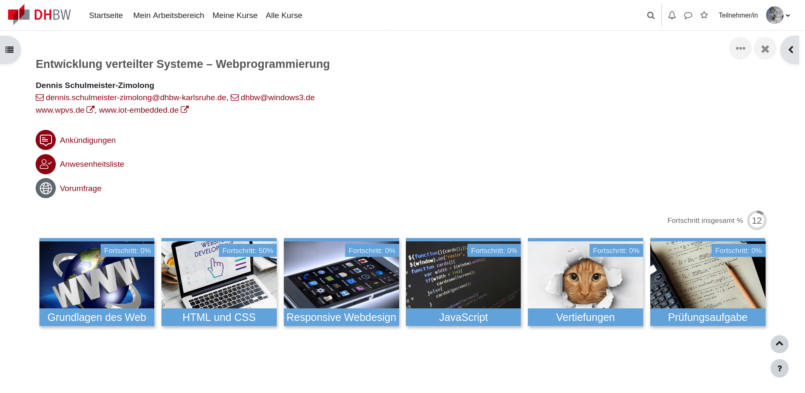
Das Skript wird laufend aktuell gehalten. Bitte haben Sie deshalb Verständnis dafür, wenn sich die Inhalte innerhalb des Semesters kurzfristig ändern oder neue Inhalte nachgereicht werden.
Bild: Gestern Nacht beim Schreiben des Onlineskripts. 🥱
OpenAI DALL-E, Prompt: Mad professor working late at night at his computer
Zuerst die gute Nachricht: Es gibt keine Klausur. 🎉
Dann die Ernüchterung: Trotzdem gibt es eine Note. 🤔
| Semester | Portfolioanteil | Abgabefrist | Gewichtung |
|---|---|---|---|
| 3 | Lernkontrollen in Moodle | Nach der ersten Vorlesung eines Kapitels | 2 |
| 3 | Programmierprojekt | Vor Beginn der Klausurphase | 4 |
| 4 | Lernkontrollen in Moodle | Nach der ersten Vorlesung eines Kapitels | 1 |
| 4 | Aufgabenblatt | Vor Beginn der Klausurphase | 3 |
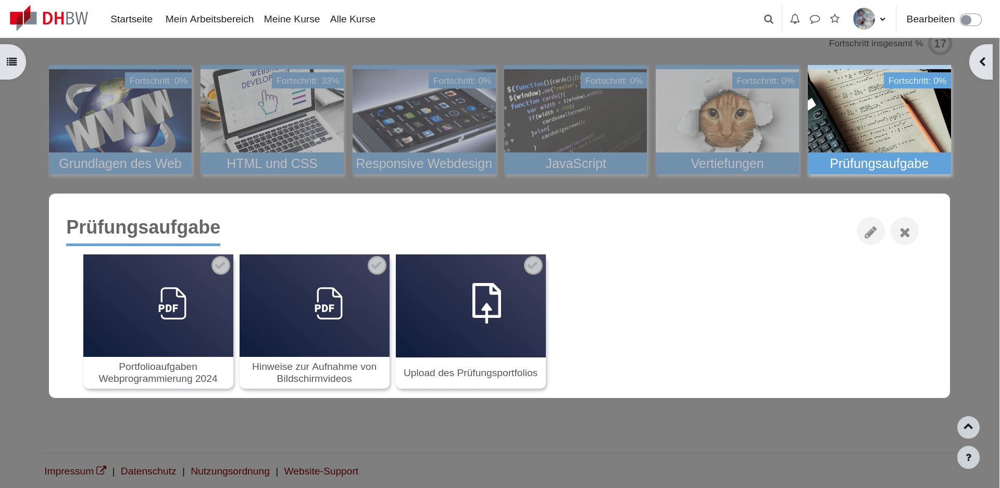
Die Lehrperson ist kein Alleinunterhalter. 🤹
Die Vorlesung macht am meisten Spaß, wenn alle mitmachen.
Natürlich können Sie nicht immer alle Materialien durcharbeiten. 💯
Planen Sie aber trotzdem bitte ausreichend Zeit für das Selbststudium ein.
Das Portfolio wird semesterbegleitend bearbeitet, um den Lernweg zu dokumentieren.
Bei Fragen und Problemen können Sie sich jederzeit melden. Die Lehrperson beißt nicht. 🐶
Als Entwicklungsumgebung werden wir Visual Studio Code, da der Atom-Editor leider nicht mehr weiterentwickelt wird. 🙁 Es handelt sich um eine weit verbreitete IDE mit Unterstützung für alle gängigen Programmiersprachen und Betriebssysteme.
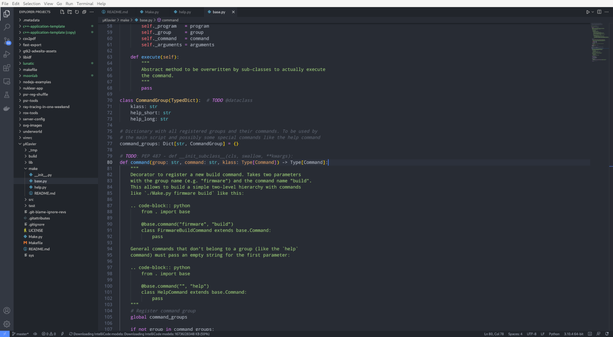
Für die Backendprogrammierung werden wir Node.js als JavaScript-Laufzeitumgebung nutzen. Es handelt sich um eine weit verbreitete Runtime für nebenläufige verteilte Anwendungen auf Basis der V8-Enginge des Google Chrome Browsers.
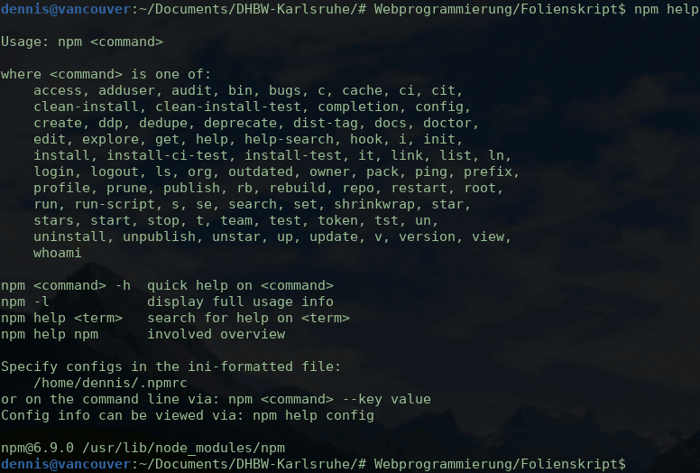
Für die gemeinsame Erstellung und Pflege von Quellcode gelten Versionskontrollsysteme wie Git als anerkannter Standard. Sie versionieren und dokumentieren alle Änderungen und stellen sicher, dass alle Projektmitglieder auf denselben Quellcodes arbeiten.
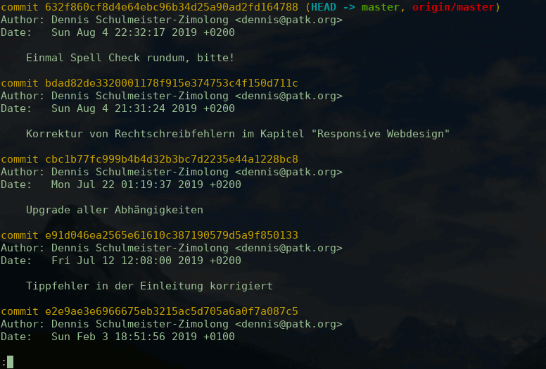
Falls Sie auf Ihrem Computer keine zusätzliche Software installieren können oder sich bestimmte Dienste über das DHBW-Netzwerk nicht erreichen lassen, können Sie auf GitHub Codespaces ausweichen. Dort steht Ihnen Visual Studio Code mit einer vorkonfigurierten Linux-VM direkt im Browser zur Verfügung.
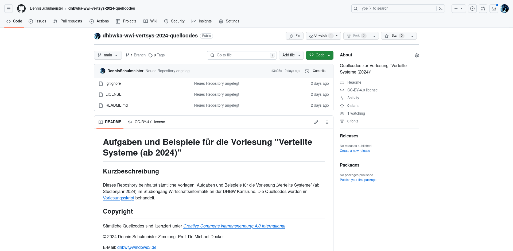
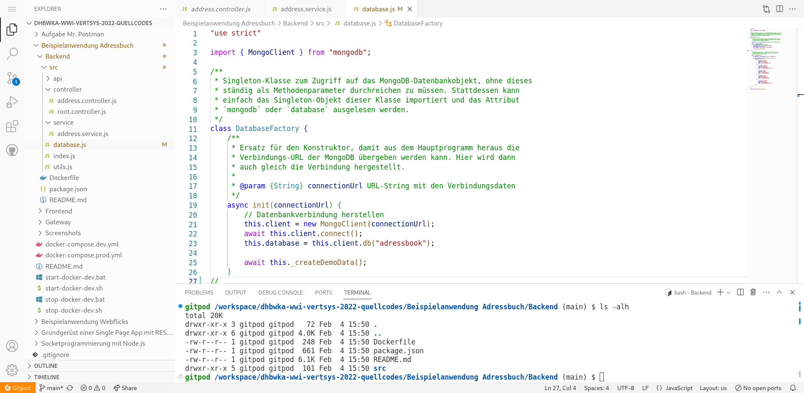